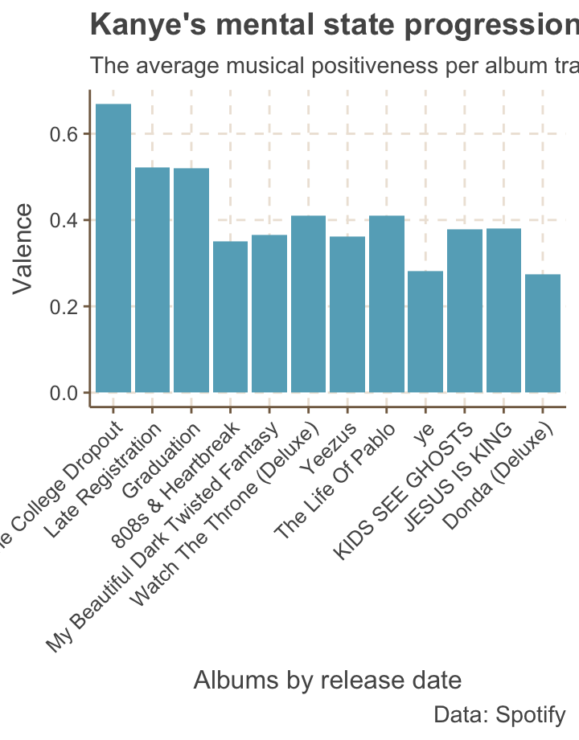
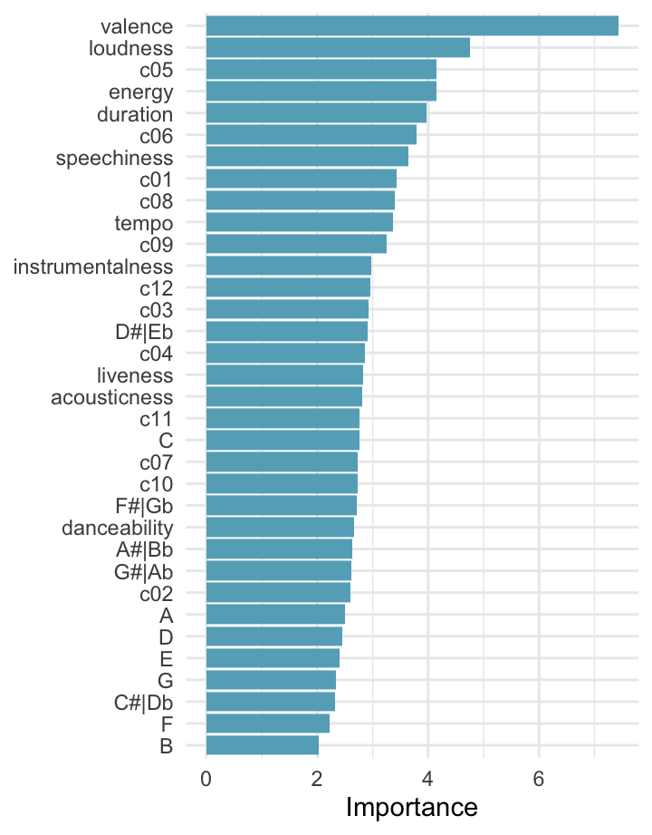
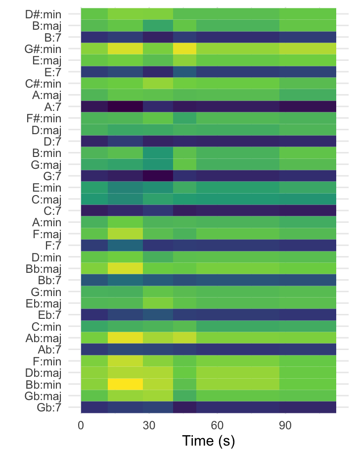
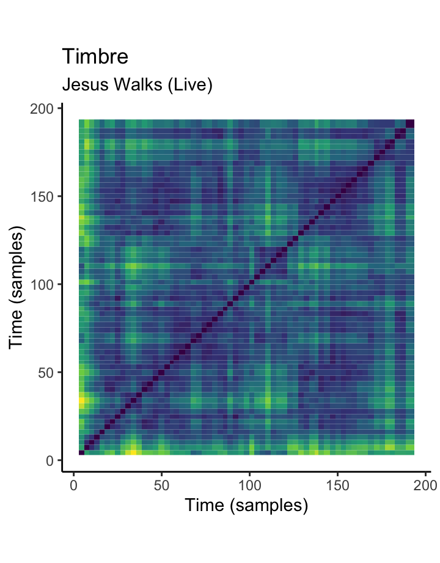
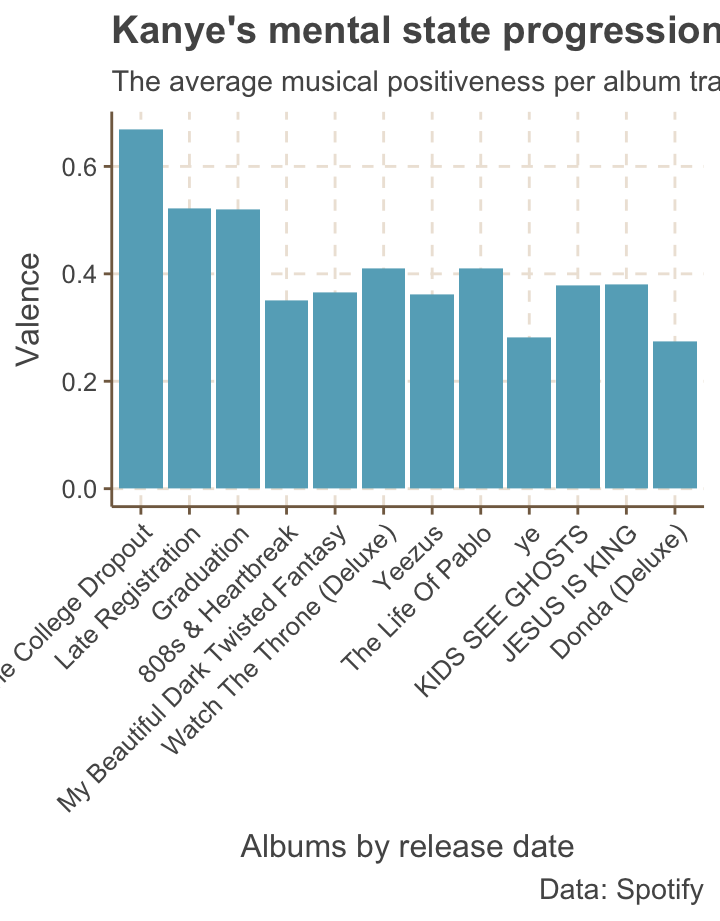
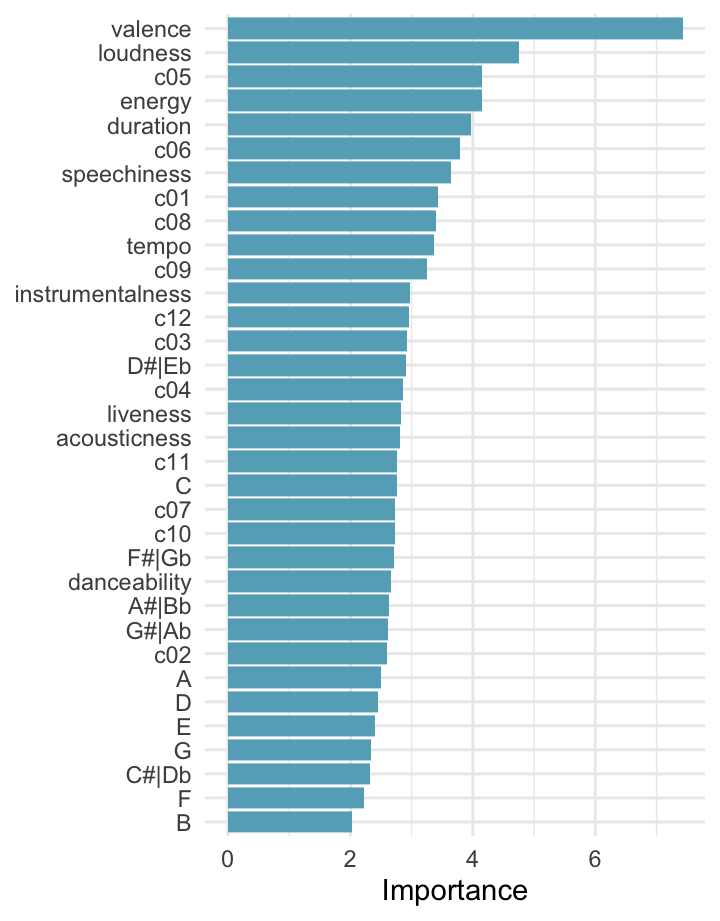
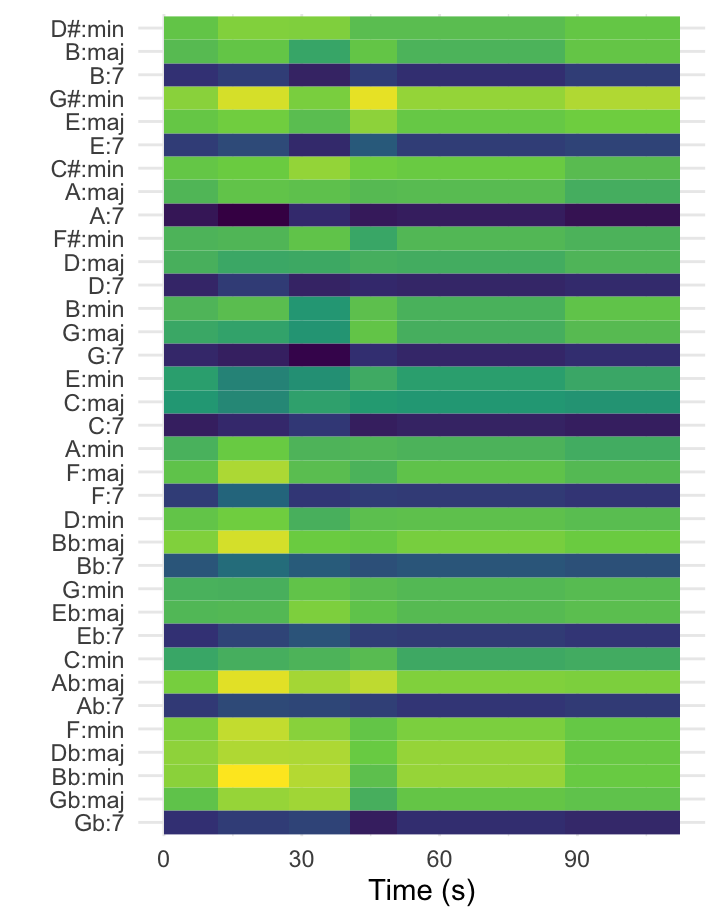
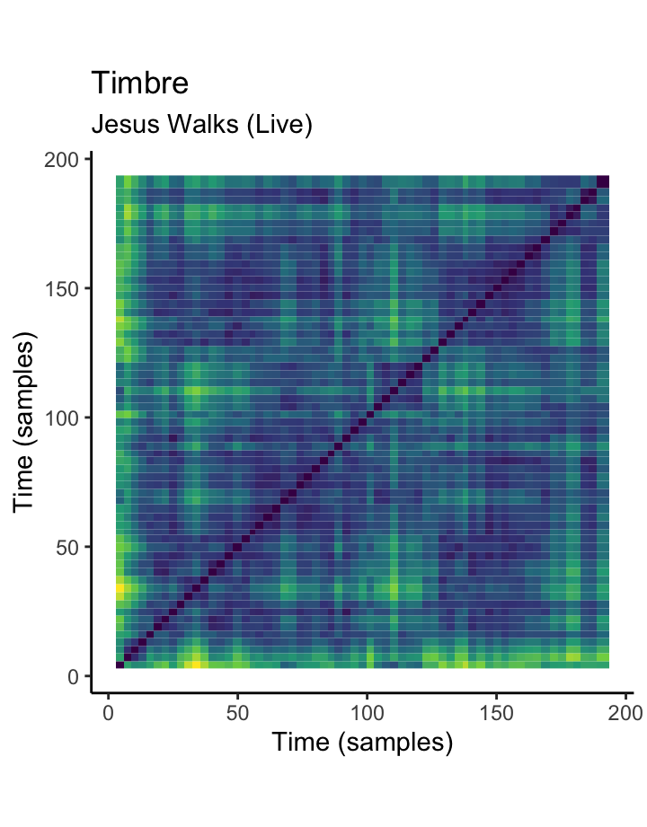
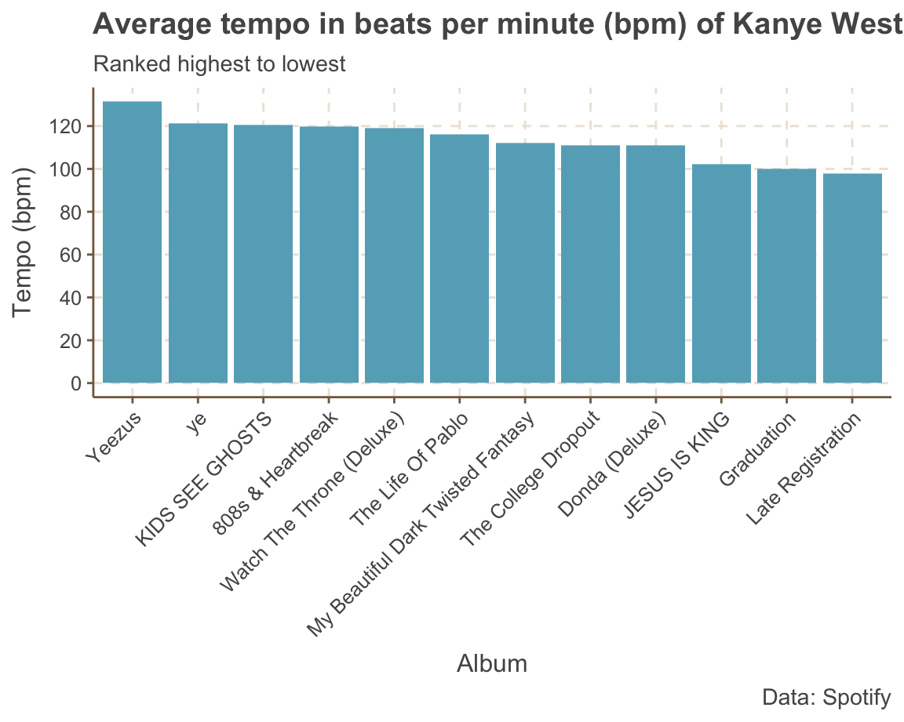
The plot on the left shows the average tempo in beats per minute (bpm) of Kanye West’s albums ranked from highest to lowest. The graph shows that Yeezus has the highest tempo with an average of 131 bpm. Yeezus having the highest tempo is no surprise. What is a surprise is that the album ye has the second-highest bpm. The album feels slower than most of his albums, especially Graduation. Thus it is an interesting candidate to examine further. In addition, the next slide will review Yeezus to see if any outliers give this album such a high bpm.
Introduction
The subject of this portfolio is the discography of the rapper, producer, and fashion designer Kanye West, now also formally known as Ye. The choice of Kanye West for this project was an easy one for me. He is arguably one of the greatest hip-hop artists of this generation, and his influence on the music industry can’t be understated. In particular, the way he keeps reinventing himself and his musical style (and with it the industry) from his first studio album, The College Dropout, to his latest works of Donda and Jesus is King.
Discography
#TODO: Add descriptions that describe the style of the album.
The College Dropout is Kanye’s first studio album, released on February 10, 2004.
Late Registration is the second studio album released on August 30, 2005.
Kanye’s third studio album, Graduation, was released on September 11, 2007.
808s & Heartbreak is his fourth studio album, released on November 24, 2008.
Kanye West released his fifth studio album called My Beautiful Dark Twisted Fantasy on November 22, 2010.
Yeezus was released June 18, 2013, and is Kanye West’s sixth studio album.
The seventh studio album released by Kanye is called The Life of Pablo and was released on February 14, 2016.
Ye, his eighth studio album, was released on June 1, 2018.
Jesus is King is Kanye’s ninth studio album, released on October 25, 2019.
The tenth studio album of Kanye West is named Donda and released on August 29, 2021. The album was named after his now passed mother Donda West.
Donda 2 is Kanye West’s eleventh and latest studio album was released in two batches in January and February 2022. Unfortunately, this album is not available on Spotify (or any streaming service for that matter), but only on his own created music player called the Stemplayer. Because of this limitation, this album won’t be included in this research.
Besides the eleven studio albums, Kanye West also released three collaborative albums called Watch the Throne (2011) with artist Jay-Z, Cruel Summer (2012) with GOOD Music, and Kids See Ghosts (2018) with artist Kid Cudi. Only Watch the Throne and Kids See Ghosts will be included in this analysis because these are primary Kanye West albums. At the same time, Cruel Summer is a collaboration of all the artists of the GOOD Music label. In addition, Spotify also does not include Cruel Summer in Kanye West’s Albums. Furthermore, Late Orchestration, the only live album in his Spotify discography, will not be included. Finally, if the album has a standard and deluxe version, the deluxe version will be chosen here.
Research
Reading these album descriptions should hint at the complex musical progression that defines Kanye West’s music journey. Therefore the central question that this study will try to answer is what makes Kanye West’s discography so unique from one another?
One of the most significant comparison points would be the discrepancies between the various albums. For instance, what attributes made each album feel so distinct but at the same time still recognize that it is a Kanye West album. I would think that the instruments and tempo are somewhat different between his first and latest work. Furthermore, his lyrics have changed a lot over the decades, such as not swearing anymore on songs, so I presume there could also be some interesting findings.
Typical Tracks:
Kanye West - Heartless (808s & Heartbreak): One of the most iconic Kanye West tracks. Lots of auto tune and minimalistic songwriting. This is probably the era of Kanye tracks that most people remember.
Kanye West - Bound 2 (Yeezus): Very different track from the rest of Yeezus, however, still very typical Kanye West.
Atypical Tracks:
Kanye West, Sunday Service Choir - Every Hour (Jesus is King): A big departure from previous work. Jesus is King is a gospel album, with the first track Every Hour being in a very different style then done before.
Kanye West - I Thought About Killing You (ye): Very slow song that is in sharp contrast to the bass heavy tracks released earlier by Kanye.
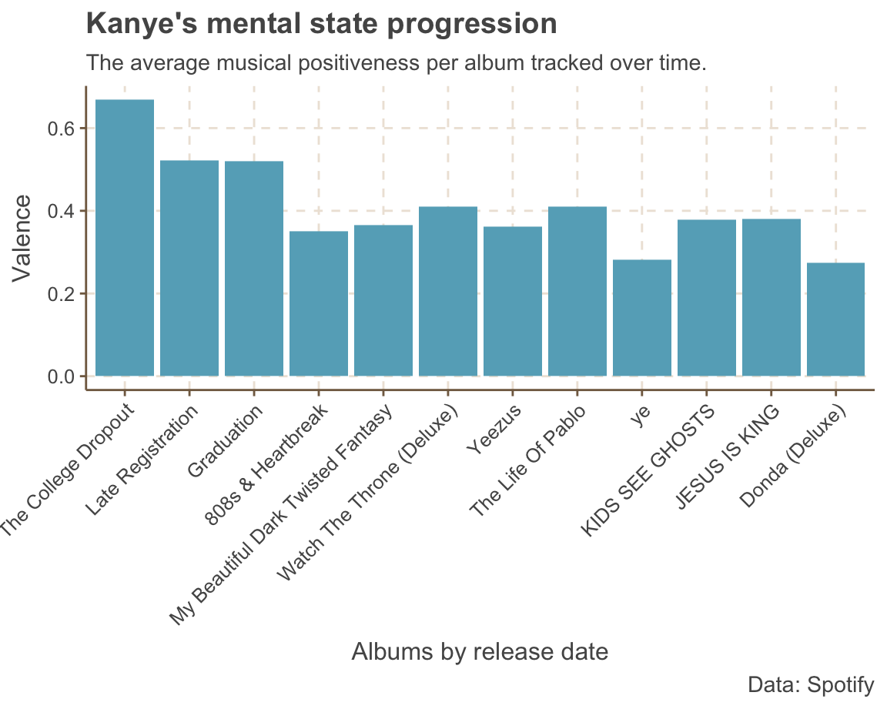
Kanye West has a complicated life full of highs and lows. Therefore, it will be interesting to start this analysis by exploring how his albums changed in terms of positivity over time. Fortunately, Spotify provides a measure of positivity called valence. Music with high valence sound more positive, while music with low valence sound more negative. Furthermore, valence is measured as a number between 0.0 and 1.0. The album’s valance score is calculated by taking the average of all the tracks in the album.
Glancing at the plot on the left, we see that from his first studio album, The College Dropout, to his latest album Donda, there has been a continuous decrease in valence. When you look at his life since his first album, which is full of controversy and mental-related issues, it is not surprising to see that his music follows a similar path. An interesting point is a sharp decrease from his album Graduation to 808s & Heartbreak. One likely reason for this drop is that his mother passed away after the release of Graduation and that his 808s album is a direct response to her passing. In addition, the album ye has the lowest valance of all his albums, which seems reasonable when you consider that this album is about the mental issues he has, including bipolar disorder.
This continuous decline in valence could be an essential component in why every album feels unique from one another.
The last plot shows that his music gradually becomes sadder as his career progresses. Let’s examine the individual tracks that make up his albums now. The following graph shows all the individual tracks plotted against valence and energy. The color denotes the track’s album.
While using valence individually provided a helpful understanding of the progression of his albums, combing it with energy will be more beneficial for individual tracks. Spotify describes the energy metric as a perceptual measurement of intensity and activity. Therefore, a track with low energy and valance can be characterized as more sad than a track with high valence and energy.
As shown on the plot, most of the tracks on the ye album are low in energy and valence, which makes sense when you consider it’s about his mental health. On the contrary, Watch the Throne, the collaboration album with rapper Jay-Z, has higher energy and valence scores. Additionally, there seem to be some outliers, such as Donda Chant and All Of The Lights, which have extremely low energy scores. Furthermore, I Love Kanye has a very high valence score. Finally, the track homecoming has both extremely high valence and energy scores. All those tracks are exciting candidates to analyze further to see what features make these scores so high. We will do this in the following sections.
Looking at the general spread of the data, we see that his music is very diverse in both valence and energy. This diversity could be an essential factor in making his music unique from album to album.
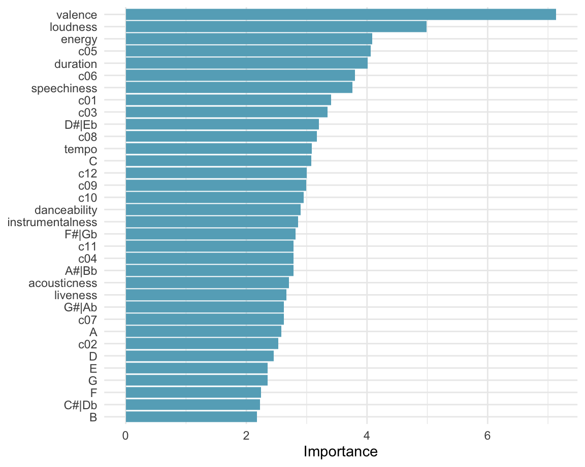
TODO: add info
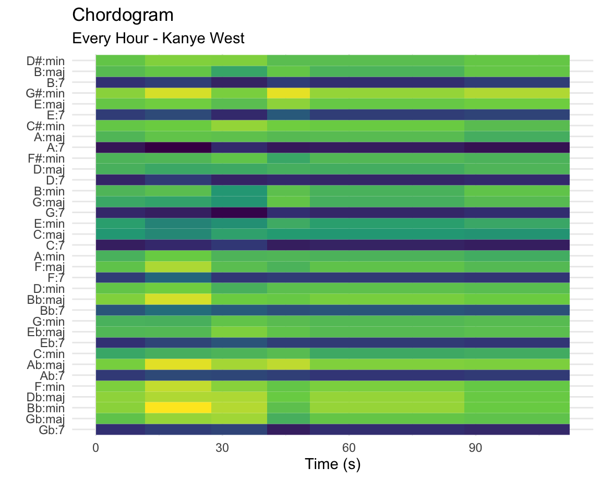
We saw that the track Donda Chant is one of the most significant outliers of Kanye West’s discography. Therefore it will be interesting to see what makes it so distinct from the rest of the songs. The plot on the left shows a chordogram of the track. The most striking point of the graph is the dark area, from 20 seconds to around 43 seconds. There is a significant change in the song in that area that you can immediately notice when listening to the track. The track consists of solely female vocals that say the name Donda repeatedly. This undoubtedly is the reason why it is such an outlier. Regardless, in the dark area, the pronunciation of the name Donda gets a lot slower, which results in the darker area on the chordogram. These experimental tracks are one of the reasons that Kanye’s sound is unique.
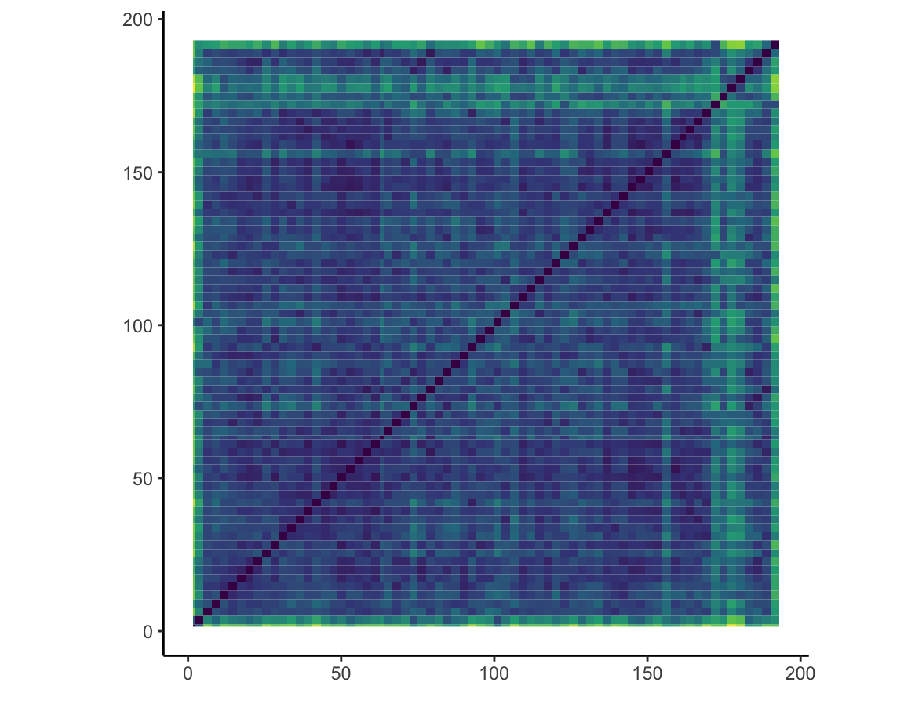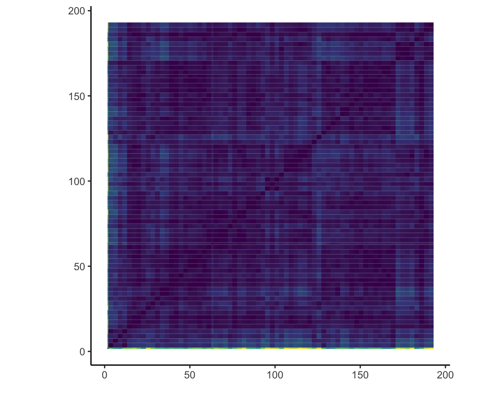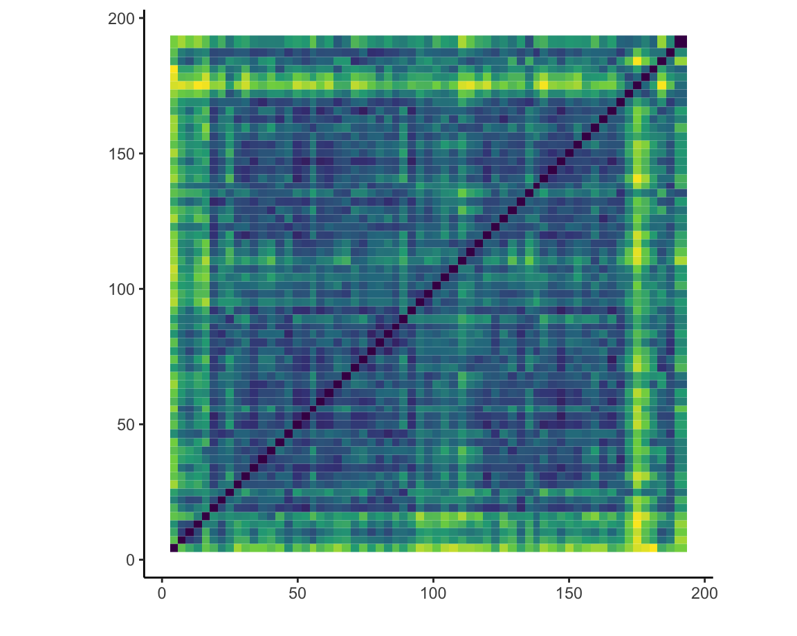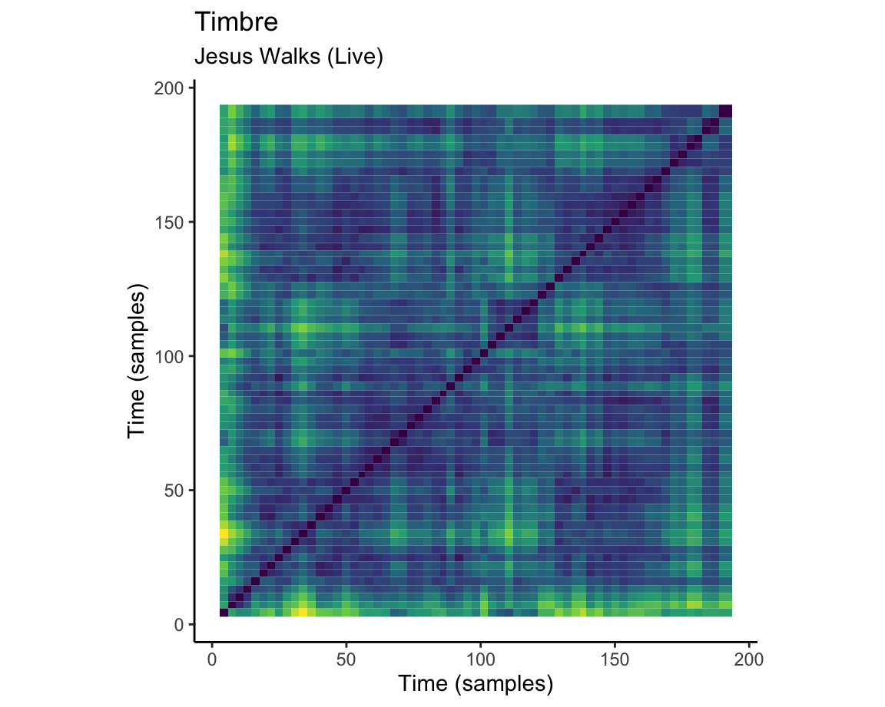
As we saw previously, Kanye West had a significant transformation in music style since the start of his career. Hence, comparing a relatively new song with older work would be interesting. The following four plots show chroma and timbre-based self-similarity matrices of the songs Through the Wire, from the 2004 album The College Dropout, and Praise God, from the 2021 album Donda. Listening to both songs, it is immediately apparent that they are very different in style. Through the Wire sounds a lot cheerfuller than the more dark tone of Praise God.
TODO: add plot details and conclusion
Conclusion goes here